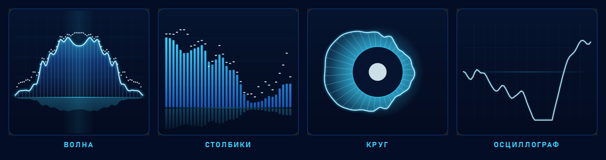
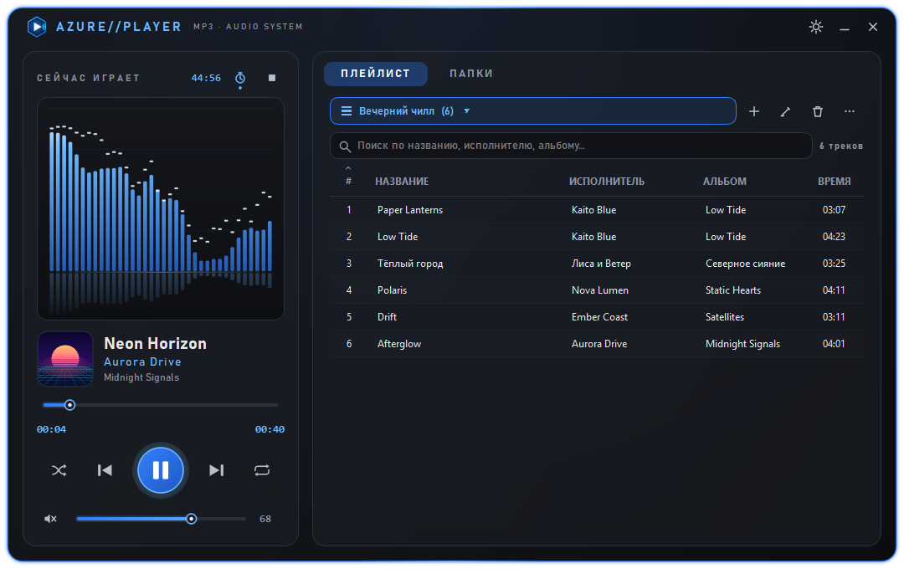
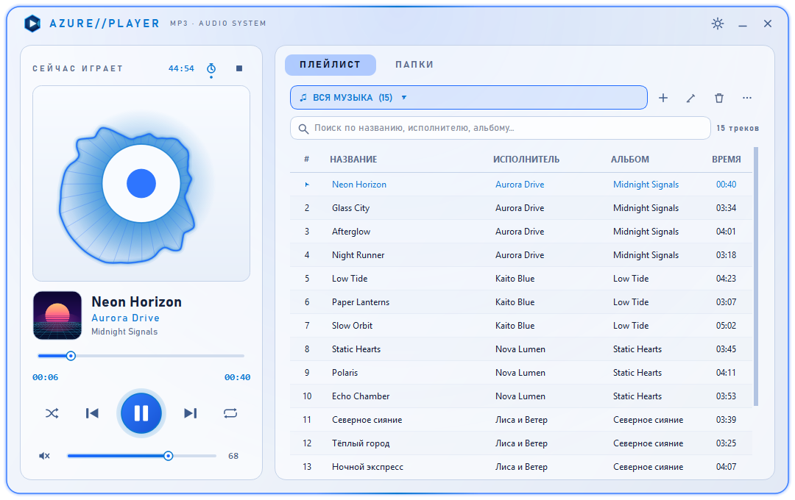
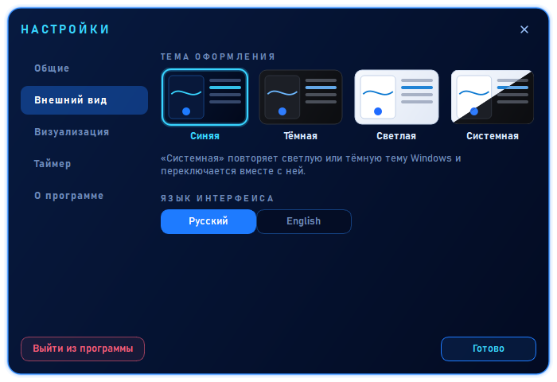
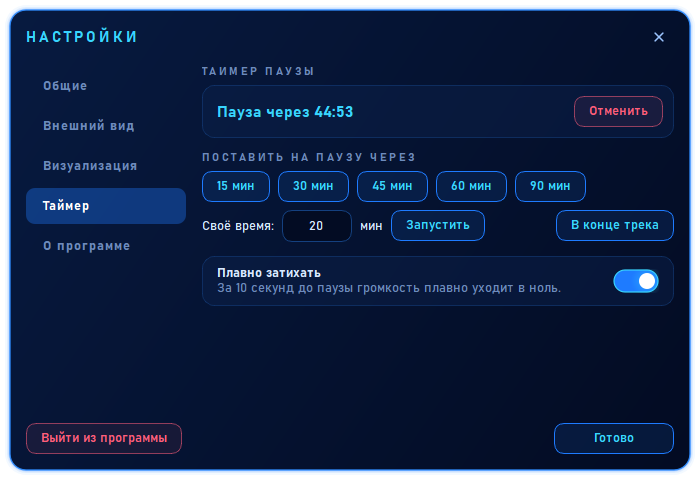

Плеер для mp3,
который приятно включать
Неоновый интерфейс, живая визуализация настоящего звука, обложки альбомов, таймер сна и четыре темы. Укажите папки с музыкой — остальное плеер сделает сам. В фоне он почти не тратит ресурсы компьютера.
199 ₽ цена запуска, потом 299 ₽
Ключ придёт в Telegram сразу после оплаты. Нажимая «Купить», вы принимаете оферту.
Разовая покупка · без подписки · без рекламы · работает без интернета

Всё, что нужно от плеера
Быстро запускается, не грузит компьютер и не мешает.
Ваши папки
Добавьте папки с музыкой: плеер найдёт mp3, flac, wav, ogg, m4a и другие форматы во всех вложенных папках и сам обновит список при запуске.
Живая визуализация
Пять видов: волна, столбики, круг, осциллограф или выключено. Реагирует на настоящий звук, переключается одним щелчком.
Обложки альбомов
Берутся из тегов песни или из картинки в папке альбома. Нет обложки — плеер нарисует свою.
Таймер сна
15–90 минут, своё время или «в конце трека». Музыка плавно затихает и встаёт на паузу, можно засыпать.
Четыре темы
Синяя, тёмная, светлая и системная: она сама переключается вместе со светлой или тёмной темой Windows.
Работает в фоне
Закрыли окно, музыка играет. Около 1 % процессора и 5 МБ памяти. Управление из трея, медиа-клавишами и кнопками в превью на панели задач.
Плейлисты
Создавайте, переименовывайте, меняйте порядок треков. Импорт и экспорт M3U.
Русский и английский
Язык интерфейса переключается одним щелчком, без перезапуска.
Помнит всё
Громкость, режимы, тему и место, где вы остановились. «Открыть с помощью» запускает трек сразу.
Пять видов визуализации
Выберите в настройках или просто щёлкните по визуализации в окне плеера.

Темы под настроение
Тёмный фон, мягкое свечение, скруглённые формы и плавные анимации в любой теме.


Удобные настройки
Всё в одном окне: работа в фоне, автозапуск, тема, язык, визуализация и таймер сна.


Как это работает
- Скачайте и установите. Установщик на русском, ярлык появится на рабочем столе.
- Пользуйтесь 7 дней бесплатно. В пробном режиме доступны все возможности.
- Понравилось? Купите лицензию. Вы получите ключ, вставите его в «Настройки → Лицензия», и плеер ваш навсегда.
Системные требования
| Система | Windows 10 или 11, 64-бит |
| Процессор и память | Любой современный ПК, от 2 ГБ ОЗУ |
| Место на диске | около 300 МБ |
| Интернет | не нужен (даже для проверки лицензии) |
| Форматы | mp3, flac, wav, ogg, m4a, aac, opus, wma |
| Языки | русский, английский |
Вопросы
Что я получаю после покупки?
Лицензионный ключ. Установщик можно скачать здесь же, он один для всех: пробная версия превращается в полную после ввода ключа.
Плеер отправляет мои данные куда-либо?
Нет. Программа работает полностью локально и не требует интернета. Настройки и плейлисты хранятся на вашем компьютере.
Windows или антивирус ругается при установке
Если у новой программы ещё нет репутации, Windows SmartScreen может показать окно «Windows защитила ваш компьютер». Нажмите «Подробнее» → «Выполнить в любом случае». Если антивирус блокирует файл, напишите на mirrormirage-dev@mail.ru, мы поможем. Проверить, что файл не изменён, можно по контрольной сумме SHA-256 (ниже).
На скольких компьютерах можно пользоваться?
Лицензия действует на 3 ваших устройства.
Будут ли обновления?
Да, обновления внутри версии 1.x бесплатны.
Можно ли вернуть деньги?
Программа — цифровой товар, а попробовать её полностью можно 7 дней бесплатно, поэтому после выдачи ключа возврат не производится. Исключение: плеер не запускается на вашем компьютере, и мы не смогли это исправить. Условие не ограничивает ваши права по закону о защите прав потребителей. Подробнее — в лицензионном соглашении при установке.
Контрольная сумма установщика (SHA-256)
050c372dc8db80d33c23187abcb32a42006adb0d37a41bf1743b9ab76a18be06
Включите музыку по-новому
Разовая покупка, лицензия навсегда. 199 ₽ цена запуска, потом 299 ₽
Скачать — 7 дней бесплатно